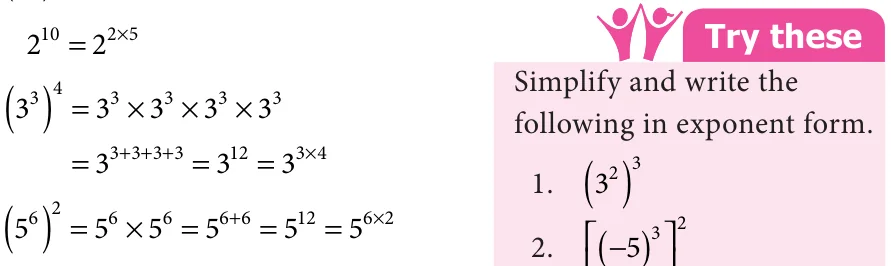
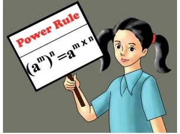
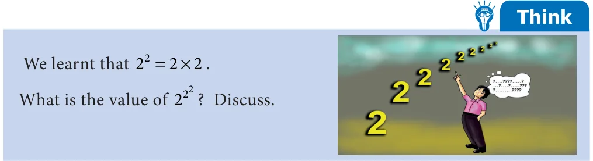
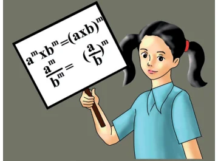

Let us learn some rules to multiply and divide exponential numbers with the same base.

3.3.1. Multiplication of Numbers in Exponential form
Let us calculate the value of \(2 \times 2\)
\(2 \times 2 = (2 \times 2 \times 2) \times (2 \times 2)\)
\(= 2 \times 2 \times 2 \times 2 \times 2\)
\(= 2\)
3+2
\(= 2\)
We observe that the base of 2 and 2 is the same 2 and the sum of the powers is 5. Now, let us consider negative integers as the base.
( \(- 3) \times\) ( \(- 3) =[( - 3) \times\) ( \(- 3) \times\) ( \(- 3)] \times\) [( \(- 3) \times\) ( \(- 3)]\)
= ( \(- 3) \times\) ( \(- 3) \times\) ( \(- 3) \times\) ( \(- 3) \times\) ( \(- 3)\)
= ( \(- 3)\)
3+2
= ( \(- )3\)
We observe that the base of ( \(- 3)\) and ( \(- 3)\) is the same as ( \(- 3)\) and the sum of the
power is 5. Similarly, \(p \times p =\) (p \(\times p \times p \times\) p) \(\times\) (p \(\times\) p) \(= p = p\)
4 2 6 4+2
Now, for any non-zero integer ‘a’ and whole number ‘m’ and ‘n’, consider a and a .
That is, \(a = a \times a \times a \times\) ... \(\times a\) (m times) and \(a = a \times a \times a \times\) ... \(\times\) ( times)

So, \(a \times a = a \times a \times a \times\) ... \(\times a\) (m times) \(\times a \times a \times a \times\) ... \(\times a\) (n times)
\(= a \times a \times a \times\) ... \(\times a (m+n\) times) \(= a\)
Therefore, \(a \times a = a\) This is called Product Rule of exponents.
m n m+n
Fig. 3.3
Example 3.7 Simplify using Product Rule of exponents.
- (i)\(5 \times 5\) (ii) \(3 \times 3 \times 3\) (iii) \(25 \times 32 \times 625 \times 64\)
Solution
- (i)\(5 \times 5 = 5\) [since, \(a \times a = a\) ] 5 625 2 64
7 3 7+3 m n m+n
\(= 5 5 125 2 32\)
3 2 4 3+2 4 5 4 5 25 2 16
- (ii)\(3 \times 3 \times 3 = 3 \times 3 = 3 \times 3 5 2 8\)
\(= 3 = 3 2 4\)
5+4 9
- (iii)\(25 \times 32 \times 625 \times 64 = (5 \times 5) \times (2 \times 2 \times 2 \times 2 \times 2)\)
\(\times (5 \times 5 \times 5 \times 5) \times (2 \times 2 \times 2 \times 2 \times 2 \times 2)\)
\(= 5 \times 2 \times 5 \times 2\)
\(= (5 \times 5\) ) \(\times (2 \times 2\) ) [grouping exponential numbers \(= 5^{2}^{+}^{4} \times 2^{5}^{+}^{6} = 5^{6} \times 2^{11}\) with the same base]
3.3.2 Division of Numbers in Exponential form

Let us calculate the value of \(2 \div 2\)
\(2_{2} = 2 \times 2 \times 2 \times 2 \times 2 = 2 \times 2 \times 2 2 2 \times 2\)
\(= 2\)
\(= 2\)
\(5 - 2\)
We observe that the base of 2 and 2 is the same ‘2’ and the difference of powers is 3. Now, let us consider negative integers as the base.
Consider ( \(- 5) \div\) ( \(- 5)\)
( \(- 5)_{2} =\) ( \(- 5) \times\) ( \(- 5) \times\) ( \(- 5)\) ( \(- 5)\) ( \(- 5) \times\) ( \(- 5)\)
= ( \(- 5) =\) ( \(- 5)\)
\(1 3 - 2\)
We observe that the base of ( \(- 5)\) and ( \(- 5)\) is the same as ( \(- 5)\) and the difference of the power is 1.
Thus, we can observe that for any non-zero integer ‘a’ and for whole numbers ‘m’
and ‘n’, consider a and a , \(m >\) .
That is, \(= \times \times \times\) ... \(\times\) ( times); \(= \times \times \times\) ... \(\times\) ( times)
\(\times \times\) ... \(\times\) (m times) \(- = = \times \times\) ... \(\times\) ( \(- n\) times) \(= \times \times\) ... \(\times\) (ntimes)
Therefore, \(\frac{a}{an} =\)

This is called Quotient Rule of exponents.
Example 3.8 Simplify using quotient rule of exponents.
- (i)\(\frac{10}{106} \frac{2 \times 3 \times 5}{33 \times 53 \times 24} \frac{6}{60}\)
Solution
- (i)\(\frac{10}{106} = =\)
- (ii)\(2_{3} \times 3_{3} \times 5_{4} = 2_{4} \times 3_{3} \times 5_{3}\) [grouping exponential numbers with the same base]
\(3 \times 5 \times 2 2 3 5\)

\(8 - 4 5 - 3 4 - 3 4 2 1\) am \(m -\) n
\(= 2 \times 3 \times 5 = 2 \times 3 \times 5\) \(_{n} = a\)
- (iii)\(\frac{6}{60} = 6 = 6\) (or) \(\frac{66}{601} = = 6\) [since \(6 =1]\)
\(4 4 4 4 - 0 4 4 0\)
3.3.3 Power of Exponential form
Let us find the value of (2 )
( ) \(= \times \times \times \times =\) (By Product rule)

Similarly, (3 ) \(= \times \times \times\)
\(= = =\)
\(+ + + \times\)
( ) \(= \times = = =\)
\(+ \times\)
In general, for any non-zero integer ‘a’ and whole number ‘m’ and ‘n’, ( ) = ( \(\times \times\) ... \(\times\) ) ( times)
\(+ + ...+\) ( times)

\(= a\)
\(m \times n\)
Hence, (a ) \(= a\)
\(m n m \times n\)
This is called Power Rule of exponents.
Example 3.9 Simplify using power rule of exponents.
Fig. 3.5
(i)(8 ) (ii)(11 ) (iii)(2 ) \(\times (2\) )
Solution
- (i)(8 ) \(= 8 = 8\) [since (a ) \(= a\) ]
\(3 4 3 \times 4 12 m n m \times n\)
- (ii)(11 ) \(= 11 = 11\) [since (a ) \(= a\) ]
\(5 2 5 \times 2 10 m n m \times n\)
- (iii)(2 ) \(\times (2\) ) \(= 2 \times 2\) [since (a ) \(= a\) ]
\(6 2 4 7 6 \times 2 4 \times 7 m n m \times n\)
\(= 2 \times 2\)
\(= 2 = 2\) [since \(a \times a = a\) ]
12+28 40 m n m+n

3.3.4. Exponent Numbers with Different Base and Same Power
- 1.To understand the multiplication of exponent numbers with different base and
same powers, let us consider the following example,
\(10 =10 \times 10 \times 10 \times 10 \times 10 = (2 \times 5) \times (2 \times 5) \times (2 \times 5) \times (2 \times 5) \times (2 \times 5) = (2 \times 2 \times 2 \times 2 \times 2) \times (5 \times 5 \times 5 \times 5 \times 5)\)
\(10 = 2 \times 5\)
But we know that, \(10 = 2 \times 5\). Hence \(10 = (2 \times 5) = 2 \times 5\) . In general, for any non-zero integers ‘a’ and ‘b’ and for whole number ‘m’ (m \(> 0)\),
\(a \times b = a \times a \times a \times\) ... \(\times a\) (m times) \(\times b \times b \times b \times\) ... \(\times b\) (m times)
= (a \(\times\) b) \(\times\) (a \(\times\) b) \(\times\) (a \(\times\) b) \(\times\) ... \(\times\) (a \(\times\) b) (m times) = (a \(\times\) b)
Therefore, \(a \times b =\) (a \(\times\) b) .
- 2.To understand the division of exponent numbers with different base and same
powers, let us consider the follwing example,
\(10 =10 \times 10 \times 10 \times 10 \times 10 =\) 202 \(\times\) 202 \(\times\) 202 \(\times\) 202 \(\times\) 202 \(= 20 \times 20 \times 20 \times 20 \times 20 2 \times 2 \times 2 \times 2 \times 2\)
Therefore, \(10 = \frac{20}{25}\) . But we know that, \(10 =\) \(\frac{20}{2}\) .
5 5
Hence, \(10 =\) \(\frac{2020}{225}\) = .
5 5 5
Hence, for any two non-zero integers ‘a’ and ‘b’ and a whole number ‘m’ (m \(> 0)\),

ab = ab \(\times\) ab \(\times\) ab \(\times\) ... \(\times\) ab (m times)
\(= a \times a \times a \times\) ... \(\times\) a(m times) \(= a_{m} b \times b \times b \times\) ... \(\times\) b(m times) b
Therefore, \(\frac{aa}{bbm}\) = . Fig. 3.6
Try these
- 1.Express the following exponent numbers using \(a \times b =\) (a \(\times\) b) .
- (i)\(5 \times 3\)
- (ii)\(x \times y\)
- (iii)\(7 \times 8\)
- 2.Simplify the following exponent numbers by using \(\frac{aa}{bbm}\) = .
- (i)\(5 \div 2\)
- (ii)( \(- 2) \div 3\)
- (iii)\(8 \div 5\)
- (iv)\(6 \div\) ( \(- 7)\)
Example 3.10 Simplify by using the law of exponents.
- (i)\(7 \times 3\) (ii) \(4 \times 2 \times 5\) (iii) \(72 \div 9\) (iv) \(6 \times 48 \div 12\)
Solution
- (i)\(7 \times 3 = (7 \times 3) = 21\) [Since, \(a \times b =\) (a \(\times\) b) ]
- (ii)\(4 \times 2 \times 5 = (4 \times 2 \times 5) = 40\) [Rule extended for 3 numbers]
- (iii)\(72 \div 9 = (72 \div 9) = 8\) [Since, \(\frac{aa}{bmb} =\) ]
- (iv)\(6 \times 48 \div 12 = 6 \times (48 \div 12\) ) [BIDMAS]
13 m m 13
\(= 6 \times\) \(\frac{48}{12}\) [Since, \(\frac{aa}{bmb} =\) ]
\(= 6 \times 4\)
\(= (6 \times 4)\) [Since, \(a \times b =\) (a \(\times\) b) ]
\(= (24)\)
- 1.All the 10 digits appear once in the expansion of 32043 . That is, the
value of \(32043 =1026753849\).
- 2.There are beautiful equations with same exponent consecutive natural numbers
as the base.
\(3 + 4 = 5\)
\(10 +11 +12 =13 +14\)
Finding the pair
the reason.


- 1.Fill in the blanks.
- (i)The exponential form 14 should be read as_______________
- (ii)The expanded form of p q is________________
- (iii)When base is 12 and exponent is 17, its exponential form is_____________
- (iv)The value of \((14 \times 21)\) is_______________
- 2.Say True or False.
- (i)\(2 \times 3 = 6\)
- (ii)\(2 \times 3 = (2 \times 3)\)
\(9 2 9 \times 2\)
- (iii)\(3 \times 3 = 3\)